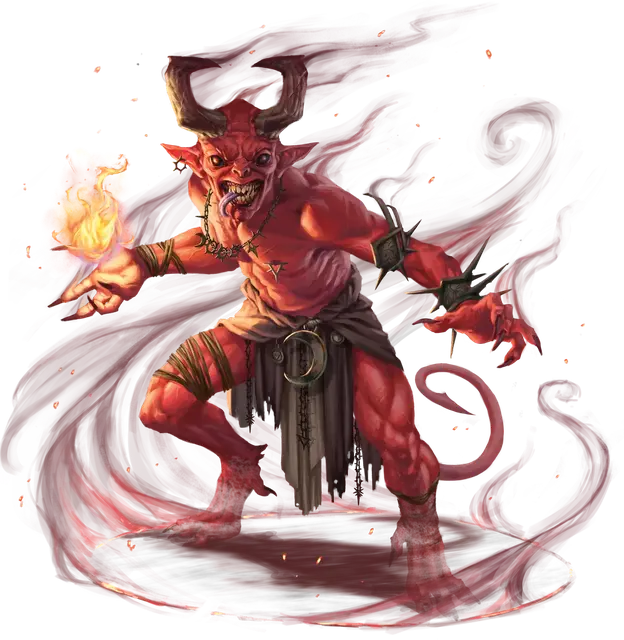

Дух исчадия
Fiendish Spirit
Большое Исчадие, без мировоззрения

Класс Доспеха 12 + уровень ячейки (природный доспех)
Хиты 50 (только демон) или 40 (только дьявол) или 60 (только юголот) + 15 за каждый уровень ячейки выше 6-го
Скорость 40 футов, летая 40 футов (только дьявол), лазая 40 футов (только демон)
| мод | спас | ||
|---|---|---|---|
| СИЛ | 13 | +1 | +1 |
| ЛОВ | 16 | +3 | +3 |
| ТЕЛ | 15 | +2 | +2 |
| мод | спас | ||
|---|---|---|---|
| ИНТ | 10 | +0 | +0 |
| МДР | 10 | +0 | +0 |
| ХАР | 16 | +3 | +3 |
Сопротивление урону огонь
Иммунитет к урону яд
Иммунитет к состояниям отравление
Чувства тёмное зрение 60 футов, пассивное Восприятие 10
Языки Бездны, Инфернальный, Телепатия 60 фт.
Опасность —
Особенности
Предсмертная агония (только демон). . Когда хиты исчадия опускаются до 0 или заклинание заканчивается, исчадие взрывается, и каждое существо в пределах 10 футов от него должно совершить спасбросок Ловкости против Сл спасброска ваших заклинаний. Существо получает 2к10 + уровень ячейки урона огнём при провале или половину этого урона при успехе.
Дьявольское зрение (только дьявол). Магическая тьма не мешает тёмному зрению исчадия.
Сопротивление магии. Исчадие совершает спасброски от заклинаний и прочих магических эффектов с преимуществом.
Действия
Мультиатака. Исчадие совершает количество атак, равное половине уровня ячейки, использованной для призыва (с округлением в меньшую сторону).
Укус (только демон). Рукопашная атака оружием: ваш модификатор броска атаки заклинанием к попаданию, досягаемость 5 футов, одна цель. Попадание: 1к12 + 3 + уровень ячейки урона некротической энергией.
Когти (только юголот). Рукопашная атака оружием: ваш модификатор броска атаки заклинанием к попаданию, досягаемость 5 футов., одна цель. Попадание: 1к8 + 3 + уровень ячейки рубящего урона. Сразу после того, как атака попадает или промахивается, исчадие может магическим образом телепортироваться на 30 футов в свободное пространство, которое оно может видеть.
Метание пламени (только дьявол). Дальнобойная атака заклинанием: ваш модификатор броска атаки заклинанием к попаданию, дистанция 150 футов., одна цель. Попадание: 2к6 + 3 + уровень ячейки урона огнём. Если цель — горючий предмет, который никто не несёт и не носит, она также загорается.
Описание
Блок статистики для призыва духа исчадия с помощью заклинания призыв духа исчадия [summon fiend].